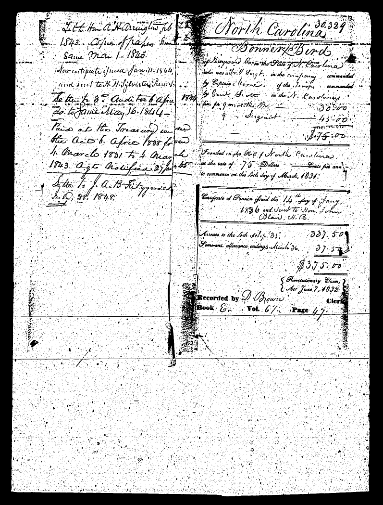
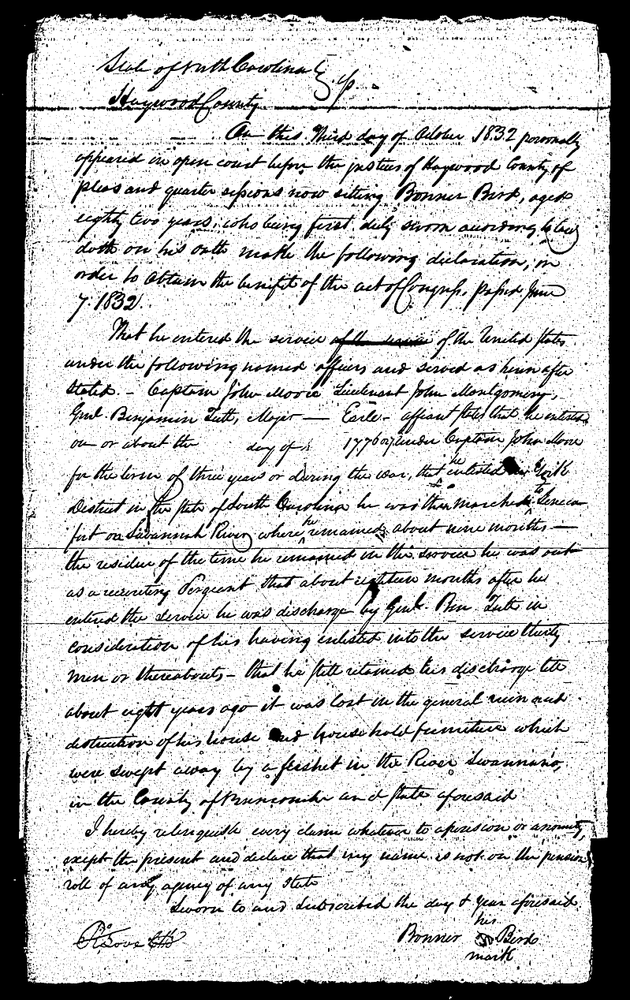
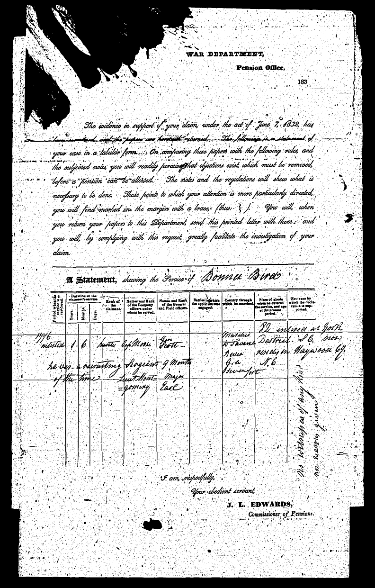
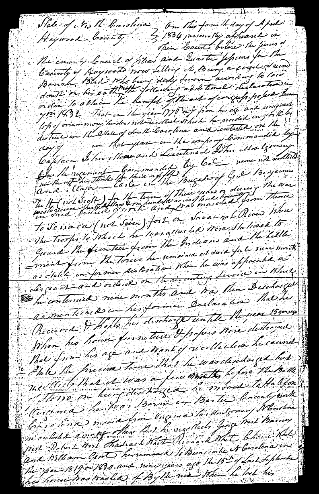
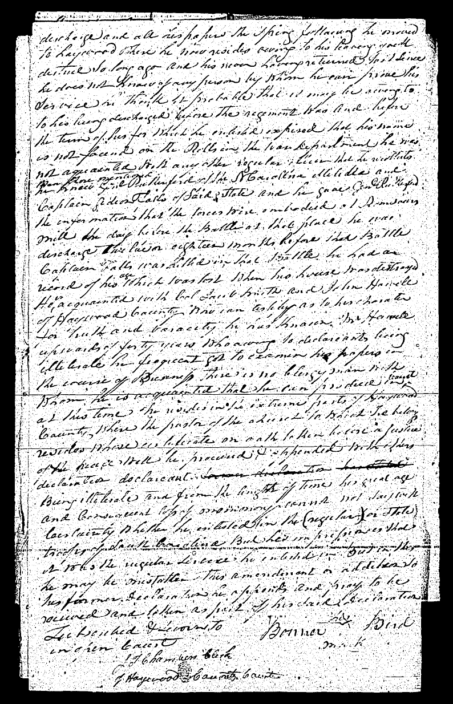

|
Bird Family
Bonner Bird
Bonner Bird is a good candidate to be the father-in-law for
Peter Long, Sr of Cabarrus and Macon NC. He is living adjacent
to Peter Long in a 1798 land deed and moved to Buncombe County
about the same time as Peter. Family tradition suggests Peter's
wife's surname was "Bird". And Peter named a son Bonner
Long.
Bonner Bird appears in the 1790 Wake County census (many area
residents migrated from Wake), land records of Montgomery and
1804 Cabarrus Counties and then 1810 census in Mecklenburg and
1820 in Buncombe. [unlocated in 1800 census]
1782 Halifax VA Personal Tax List
Byrd, Bonner 1 - 2 - - (tithes, negros, horses, mules, cattle)
also listed: Edward Byrd
note: he is not found in the 1782 nor the 1785 "tax"
list for Halifax VA
Revolutionary War Pension Application:
Bird Bonner, S8070, NC Line, applied [pension] 3 Oct 1832
Haywood Cty NC aged 82, enlisted in York District SC, soldier
was born in Bertie Cty NC and after his discharge moved to Halifax
Cty VA then later moved to Montgomery Cty NC then to Buncombe
Cty NC in 1819 or 20 then later to Haywood Cty NC




 |